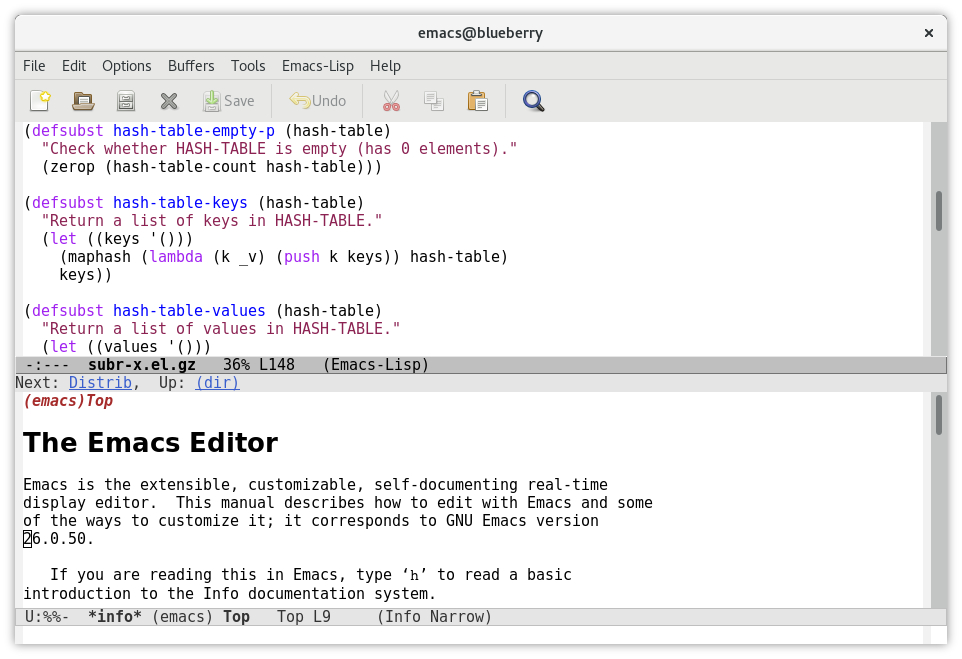

모든 길은 Emacs로 통한다
Emacs로 나만의 워크플로우 구성하기
$ whoami
- 자칭 힙스터
- 타칭 홍대병
- 리눅스 유저
- Emacs 유저
오늘은 Emacs에 대해 이야기해 봅시다.

GitHub: @RangHo
Instagram: @rangho_lee
에디터 설문조사
고대부터 내려오는 그들의 싸움
- 전통의 강호, Vim과 Emacs
- 엔터프라이즈의 친구, Visual Studio와 IntelliJ IDEA
- 스타벅스 입장권,
Atom과 Visual Studio Code - 홍대병 오버도즈, JetBrains Fleet과 Zed
하지만 실상은…
그래서 앞에 나온 사람은 지금까지 뭘 썼을까
- 2010 ~ 2015
- Visual Studio 2010 Express, Notepad++,
QBASIC - 2015 ~ 2016
- Eclipse, jEdit
- 2016 ~ 2017
- IntelliJ IDEA, Atom
- 2017 ~ 2019
- Rider, Visual Studio Code
- 2019 ~ 2021
- NeoVim (
RangHo/dotfiles@f7da34d) 2021 ~ 2023PowerShell ISE- 2021 ~ Present
- Emacs (
RangHo/dotfiles@59ed40f)
여기저기 기웃거리다가 느낀 점
최근 IDE의 필요성이 점점 더 낮아지는 중
- IDE는?
- 느리고 무겁고 못생겼고 느리고…
- 텍스트 편집기는 도움이 안 되잖아?
- 하지만 Language Server Protocol이 등장한다면 어떨까?
- 디버거도 못 붙이면서?
- 하지만 Debug Adapter Protocol이 등장한다면 어떨까?
"이래서 Visual Studio Code는 혁신이야!"

"그거 Emacs는 20년 전부터 지원하던 건데…"
그래서 Emacs가 뭔데
- 원래 이름은 EMACS (Editing MACroS)
- 1976년에 처음 공개됨
- 이후로 많은 변종이 등장
- EINE, ZWEI (1978)
- Multics Emacs (1978)
- Gosling Emacs (1981)
- CCA Emacs (1984)
- GNU Emacs (1984)
GNU Emacs?
- GNU 프로젝트의 일부
- 크로스 플랫폼
- Windows
- macOS
- Linux
- Android << NEW!
- C와 Emacs Lisp로 구현되어 있음
- C 소스코드보다 Emacs Lisp 코드가 훨씬 더 많음
- 운영체제와 소통하는 부분은 C
- Emacs Lisp 인터프리터도 C
- 나머지는 전부 Emacs Lisp
- Emacs는 텍스트 편집기가 아니다!
- Emacs는 Lisp 인터프리터이다!!!
- (거기에 텍스트 편집용 Lisp 코드를 곁들인)
그래서 Lisp는 또 뭔데
- 원래 이름은 LISP (LISt Processor)
소괄호 지옥- 언어의 모든 것을 리스트로 표현함
(list 1 2 3) ; -> '(1 2 3)
- Emacs를 구성하는 모든 Lisp 코드는 Lisp 자료구조임
- 자기 자신을 변화시키는 코드를 쉽게 구성할 수 있음
- REPL! (Read, Eval, Print, Loop!)
에디터의 모든 것을 바꿀 수 있다?!
- 기본적으로 Emacs는 그 자체로 에디터가 아님
- Emacs Lisp 인터프리터 + Emacs Lisp 코드 = Emacs 텍스트 편집기
- Emacs Lisp 코드가 자기 자신을 바꿀 수 있다면…
- …텍스트 편집기를 구현하는 모든 것을 바꿀 수 있다?!
Case Study 1: Evil
이런 확장성을 떠나서, 기본값 Emacs에는 치명적인 단점이 있는데…

Emacs 사용자 중에 새끼손가락이 성한 사람이 없다
Emacs는 modifier 키를 매우매우 적극적으로 이용하는 편…
M-x- 명령어 입력 창 열기
C-x C-f- 파일 열기
C-x C-s- 파일 저장
C-x C-c- Emacs 종료
C-u 20 C-x e- 마지막으로 실행한 매크로를 20번 반복해서 실행
Control 키와 Caps Lock 키를 바꾸는 것은 필수!
하지만 그렇더라도 새끼손가락이 너무 많이 쓰인다…
천 리 길도 벤치마킹부터
Vim의 modal editing은 굉장히 잘 설계한 편!
- 방향키
h,j,k,l모두 손에서 가장 힘이 센 손가락에 매핑되어 있음 - 여러 레이어를 분리하여 modifier 없이도 키보드 전체를 사용할 수 있음
- 커맨드 라인에서 실행할 수 있는 명령 중, 자주 사용하는 명령은 짧고 간결함
그러면 Vim 거를 훔치자!
해결법: 베끼기
Evil (Extensible Vi Layer)
현존하는 가장 완벽한 Vi(m) 모달 에디팅 구현체
Vim의 모든 주요 기능을 지원함
- 텍스트 오브젝트
- 매크로
- 내비게이션
- 명령어
- 등등…
그리고 점수를 더 잘 받기
이 모든 기능과 Emacs Lisp의 확장성이 더해지면…
기존 Emacs 기능과 Vim의 모달 에디팅을 결합한 예시로…
evil-mode- Emacs 기능을 Vim에서 사용하는 것과 비슷한 방식으로 대체함
god-mode- 기존 Emacs에서 사용하는 단축키를 유지하되, modifier 키를 누르지 않아도 되게!
예를 들어,<leader> x f는C-x C-f와 같다
이 둘을 섞으면 hades-mode!
예를 들어, treemacs에서 "Personal" 워크스페이스 안에 다른 프로젝트를 추가하려면…
- Before
C-c RET C-c C-w s personal TAB RET C-c C-p a new-project RET- After
, c RET , c w SPC s personal TAB RET , c p SPC a new-project RET
Case Study 2: Magit
evil-mode는 개발 속도를 향상시켜주는 minor mode 중 하나
magit은 Git을 사용하는 개발자라면 필수적으로 사용해야 하는 major mode 중 하나
- Major mode?
- 지금 열고 있는 파일을 어떻게 편집할지 (정확히는 버퍼의 편집 방식을 결정하는) 모드
- Minor mode?
- Major mode의 동작을 보완하거나 변경하는 모드
에이, 다른 것도 많은데 굳이?
다른 에디터에서도 Git 클라이언트는 있다!
- Vim
fugitive.vim- Visual Studio Code
- GitLens
TerminalGitk
하지만 magit에 비하면…..
Magit 사용해보기!
백문이 불여일견이다! magit으로 아래 레포지토리를 만들어보자!
Case Study 3: Org-mode
org-mode는 기본적으로 마크업 언어!- ==
org-mode는 major mode! magit과 달리, 파일 편집을 담당하는 major mode- 주로…
- 블로그나 다른 글을 작성할 때
- 할 일 목록을 작성할 때 (
org-agenda) - 사람이 읽기 쉽고, 기계도 이해하기 좋은 공용 마크업으로 (e.g.
treemacs-edit-workspaces) - Literate programming
타의 추종을 불허하는 내보내기 기능
org-mode로 작성한 텍스트는 얼마든지 다른 포맷으로 내보낼 수 있다!
- 일반 ASCII 텍스트 파일 (
ox-ascii) - LaTeX 파일 (
ox-latex) - HTML 파일 (
ox-html) - Markdown 파일 (
ox-md) - ODT 문서 (
ox-odt) - Man 페이지 도움말 (
ox-man) - 기타등등…
…그 기능을 직접 만들기?!
모든 내보내기 백엔드는 ox 내보내기 엔진을 기반으로 작성된 것!
ox-hugo- Hugo 블로그 엔진으로 바로 배포할 수 있는 Blackfriday 마크다운으로 변환
ox-svelte- Svelte에서 바로
import할 수 있도록 문서를 Svelte 컴포넌트로 변환
여기저기서 사용하는 문법을 하나로 통합할 수 있다!
Case Study 4: Org-roam
- Zettelkasten Method (메모 상자 기법)
- 아이디어, 노트, 지식 등을 작은 메모지에 기록하고, 서로 연결고리를 만들어 추후 참조하기 쉽도록 보존하는 노트 작성 기법.
전뇌인간에네이 되기
메모 상자 기법으로 작성한 노트를 네트워크에 공유하거나 백업하는 것을…
- 디지털 가드닝Digital Gardening
- 개인 지식 창고Personal Knowledge Base
- 세컨드 브레인Second Brain
- 브레인덤프Braindump
- …
여기서 org-mode의 ID 링크를 이용한 메모 상자 프로그램이 org-roam!
당신도 쓸 수 있다!
Emacs가 다른 에디터에 비해서 진입장벽이 높은 것은 사실
이미 Vim에 발을 담궈 본 당신에게

Spacemacs는 Emacs에 evil-mode를 포함한 여러 패키지가 미리 설치된 배포판

Vim에 익숙한 사람이라면 에디팅 방식에는 금방 적응할 수 있다!
다만 Spacemacs에 너무 익숙해지면 정작 Emacs에서 제공하는 막강한 기능을 전부 활용하기 힘들 수도 있으니 주의.
첫 발을 떼기가 힘든 당신에게

기본적으로 Emacs를 설치하면 다른 에디터처럼 메뉴를 포함한 UI가 제공됨!
- 마우스 사용 가능
- 엄청나게 자세한
*Help*도움말 페이지 customize설정 GUI
GUI의 도움을 받아가면서 기본적인 사용 방법에 익숙해졌다면, 추천하는 스타터 설정을 적용해보자!
- Emacs 컨트리뷰터 Steve Purcell의 설정 파일 모음
- FOSS 소식 유튜버 System Crafters에서 제공하는 설정 파일 모음
TL; DR
- 사람마다 생김새가 다르듯이, 사람마다 편하다고 느끼는 점도 다름
- 모든 에디터는 어떤 방식으로든 개인화할 수 있는 부분이 존재
- 나를 에디터에게 맞출 것인가? vs. 에디터를 나에게 맞출 것인가?
나에게 맞출 수 있는 에디터가 무엇이 있을까?
결국 어디로 돌고 돌아도 결론은 Emacs.
Q&A
어떤 방식으로 Emacs를 튜닝해서 쓰시나요?
배포판에 구애받지 않는 바닐라 Emacs!
원래 설정 파일은 기능 하나당 파일 하나로 구분…
현재는 literate programming 방법을 이용해서 org-mode로 코드 작성 중